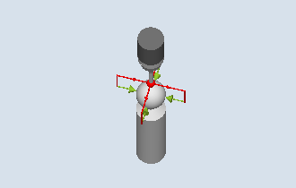

Using this measuring method, a workpiece probe can be calibrated at any position in space. This has a special meaning in conjunction with swivel functions and transformations.
The same calibration data is generated as for calibration in the ring:
Inclined position of the workpiece probe
Trigger values
Radius of the probe ball
In addition, the probe length in the tool axis can be determined based on the machine data.
MD51740 $MNS_MEA_FUNCTION_MASK, bit 1 (probe ball center or ball circumference)
The calibration sphere center is determined as supplementary result.
| Note |
|
For the version "Positioning on circular path", positioning through 90° is always in the mathematical positive direction. |
The measurement sequence is divided into the following steps:
Determining the center point coordinates of the reference sphere
Determining the calibration data
This procedure can be made parallel to the axis by passing or moving around the reference sphere.
Calibration at the sphere (CYCLE976), example of overtravel (intermediate positioning parallel to the axis)
The diameter of the reference sphere must be known.
Tool type of the probe:
3D multi probe (type 710)
Mono probe (type 712)
SPOS-capable spindle required.
The workpiece probe must be positioned above the reference sphere so that it can be approached collision-free from above and at the circumference.
The workpiece probe is located above the sphere center.
See also:
Calibration: Probe on ball (CYCLE976)